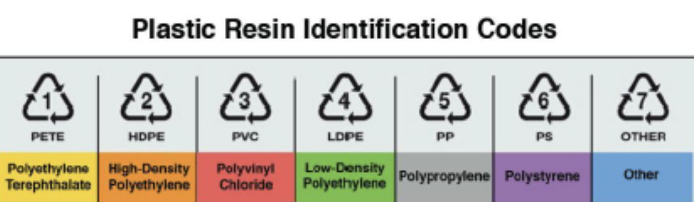
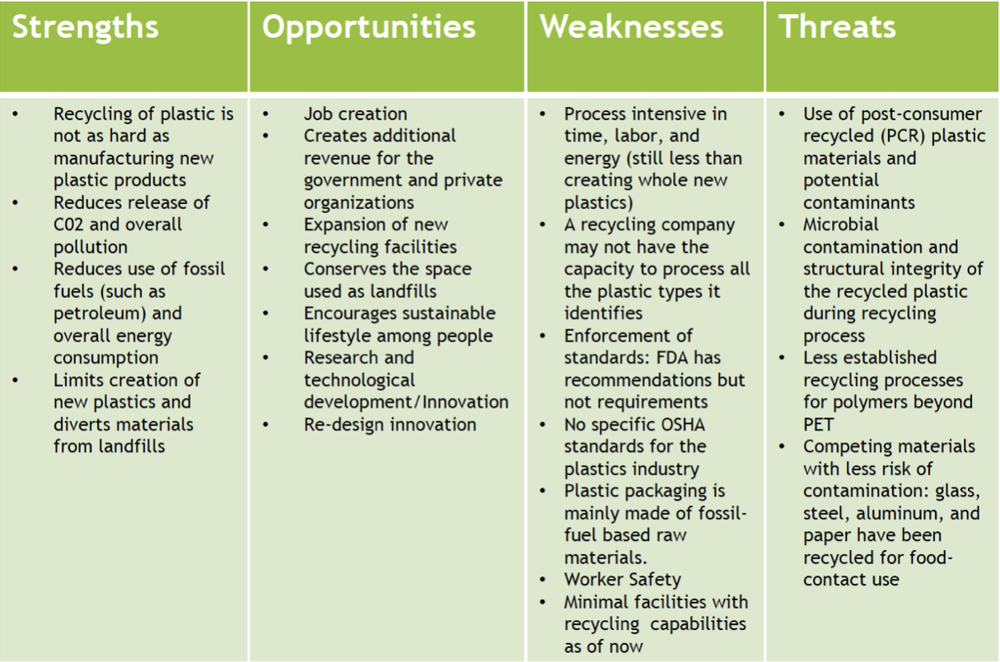
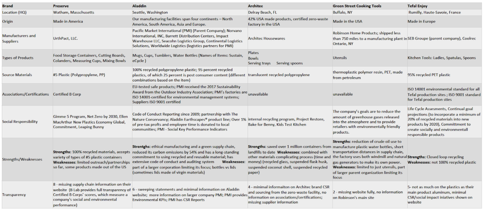
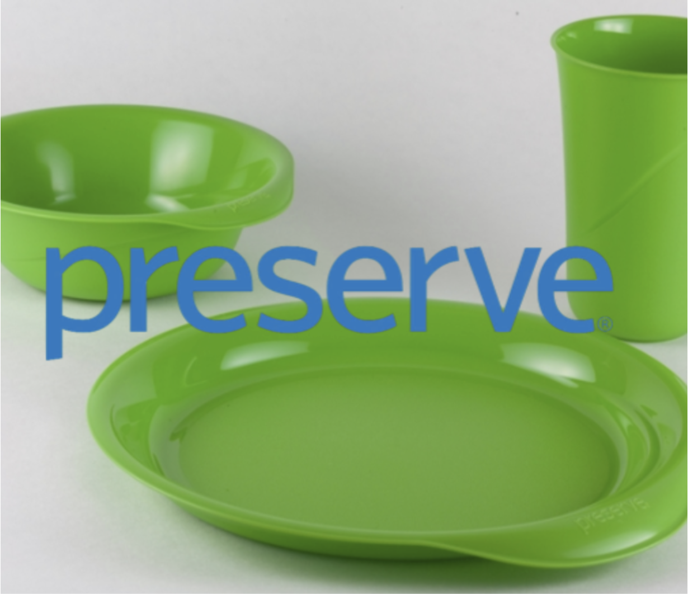
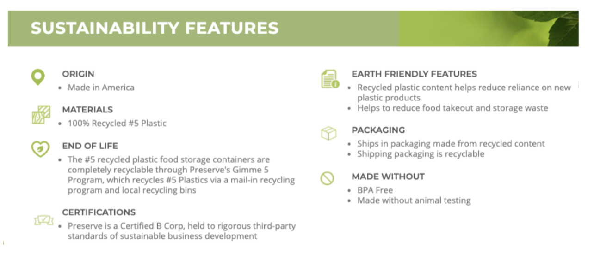
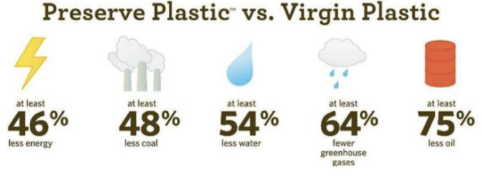

Definition
Plastic Recycling
- Plastic recycling is the process of recovering different types of plastic material in order to reprocess them into varied other products, unlike their original form. An item made out of plastic is recycled into a different product, which usually cannot be recycled again.
- The number within the recycling symbol on plastic containers, known as an SPI Code, provides a wealth of information about the safety and biodegradability of each plastic type.
- RIC – stands for Resin Identification Code which is equal to SPI Code from the Society of the Plastics Industry (SPI)

RIC 1: Polyethylene Terephthalate (PETE or PET)(fabrics, containers such as bottles and food tins)
RIC 2: High-Density Polyethylene (HDPE or PE-HD)
(plastic rulers, toiletry packaging containers, benches, tables, etc.)
RIC 3: Polyvinyl Chloride (PVC or V) (packaging containers, electricity installation cables, and rigid pipes)
RIC 4: Low-Density Polyethylene (LDPE or PE-LD)
(flexible container lids, squeezable bottles, and frozen food bags)
RIC 5: Polypropylene (PP) (reusable microwave containers, kitchen utensils, disposable food containers, and soft drink bottles)
RIC 6: Polystyrene (PS) (clear plastics such as disposable cups, trays, packing containers, etc.)
RIC 7: Miscellaneous Plastics (ex: polycarbonate and polylactide; They are mostly used in the manufacturing of baby milk bottles, riot shields, plastic toys, sunglasses lenses, and automotive headlamps)
Supply Chain Overview

Recent & Relevant News
Legal Issues & Major Controversies
Mapping the Supply Chain
Supplier Engagement Model
Governance
Benchmarks


Company Overview: Preserve
Preserve makes stylish and sustainable kitchenware, including cutting boards, small and large
colanders, mixing bowls, measuring cups and food storage containers. The kitchen line is made completely from #5 recycled plastic, and in turn is recyclable. If your local recycling center doesn’t accept #5 plastics, you can take advantage of Preserve’s Gimme 5 program, where you can take your #5 plastics to certain locations for recycling or mail them to Preserve to be broken down and reused.
Preserve Facts
Commitments
- Gimme 5 Program
- B Corp Certified
- Net Zero by 3030
- Ellen MacArthur New Plastics
Economy Global Commitment
- Leaping Bunny
- Testing/Safety
- Tested for heavy metals and our plastic meets leaching requirements more rigorous than the standards set for tap water
Life Cycle Assessment (LCA) approach to assess their impact.
- FDA Guidelines for PCPs


Monitoring
Verification
Reporting
Life Cycle Assessments
Other Challenges & Impacts
Innovations
Conclusions
- Preserve has the strongest products of recycled plastics kitchenware compared to other companies in the comparison Benchmarking Analysis
- Uniquely positioned to make a meaningful difference in terms of pollution, greenhouse gas emissions, global warming, waste reduction, and natural resource preservation.
** They have the most varied offerings of kitchenware. ** They do all their recycling and manufacturing in the USA. Manufacturing in the US keeps the shipping distances shorter and helps us to reduce our impact. ** 100% recycled plastics and focused on ultimately closing the product lifecycle loop. ** They scored in the top 10% out of all 1,200+ B Corporations for creating the most positive overall environmental impact. ** They set the gold standard among the “Best of the Best.” ** Preserve has also been voted seven years in a row to the Best for World, Environmental Impact list, which means that we have ranked in the top 10% of all B Corps in the environmental impact category. ** While they have strong CSR and Social Impact Initiatives, the company could improve by providing this information in full documents and guides on their website ** They are missing key supply chain information on their website
- Main points to improve upon with the companies of comparison
** Transparency on CSR and supply chain information ** Accessibility to product information on company websites including the categories listed in benchmarking spreadsheet ** If part of a larger brand, provide adequate attention and information on the product and/or sub-brand (such as with Aladdin)
Sources and References
- Birgit Geueke, Ksenia Groh, Jane Muncke, Food packaging in the circular economy: Overview of chemical safety aspects for commonly used materials, Journal of Cleaner Production, Volume 193,
- 2018, Pages 491-505, ISSN 0959-6526, https://doi.org/10.1016/j.jclepro.2018.05.005. (http://www.sciencedirect.com/science/article/pii/S0959652618313325)
- David I. Clark, Food Packaging and Sustainability: A Manufacturer's View, Reference Module in Food Science, Elsevier, 2018,ISBN 9780081005965, https://doi.org/10.1016/B978-0-08-100596-
- 5.22587-0. (http://www.sciencedirect.com/science/article/pii/B9780081005965225870)
- https://www.fda.gov/regulatory-information/search-fda-guidance-documents/guidance-industry-use-recycled-plastics-food-packaging-chemistry-considerations
- https://www.norcalcompactors.net/processes-stages-benefits-plastic-recycling/
- https://www.osha.gov/plastic-industry
- https://bcorporation.net/certification
- https://www.preserve.eco/
- https://www.prnewswire.com/news-releases/two-massachusetts-companies-team-up-to-provide-plastic-cutlery-made-from-recycled-polypropylene-to-national-organic-grocery-chain-300384069.html
- https://www.tefal.com/Cookware-%26-Kitchenware/Kitchen-Tools-%26-Gadgets/Kitchen-Tools/Enjoy-Kitchen-tools-range/p/R-enjoy
- https://aladdin-sustain.com/
- https://www.corpresponsibility.pmi-worldwide.com/aladdin-supports-nature-conservancy/
- https://architecproducts.com/#!brand/list?t-ids[]=2
- https://www.housewares.org/housewaresconnect365/detail?com_uid=00001462
- https://recyclenation.com/2012/06/green-utensils-green-street/
- https://findingdebra.com/green-street-kitchen-utensils-made-from-recycled-water-bottles-review-giveaway/
- https://www.corpresponsibility.pmi-worldwide.com/recycled-reusable-and-recyclable/
- https://www.motherearthliving.com/home-products/aladdin-ecycle
- https://www.pmiworldwide.com/web_images/PMI-CSR-2020-FINAL-10.16.20.pdf